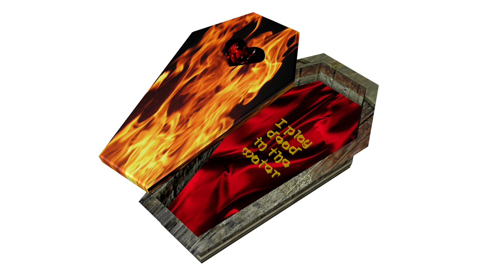

and let myself float.
My eyes closed with the sun
burning through,
red orbs, sloshing inner earths.
You kept swimming towards me
as my body drifted with the tide.

You reached only with your mouth and planted quickly, sweetly.
I let you hold me,
still strands of hair stuck to eyelids.
In the ocean, on the edge of the earth.